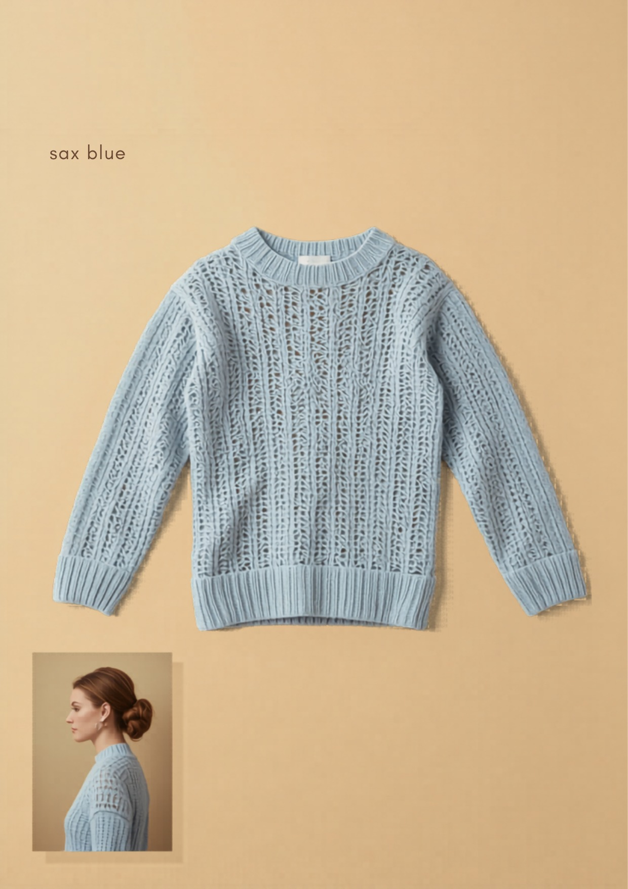

和
東和盛泰株式会社TOUWASEITAI CO., LTD.
PRODUCTION TECH PACK
工場用 製品仕様書
FACTORY / 製造用・全3葉 1/3
01
製品概要・基準写真
PRODUCT & REFERENCE PHOTO

▲ 基準現品写真（色：サックスブルー）。本写真と360°図・寸法を相違なきこと。
| カテゴリ | 長袖プルオーバー（クルーネック・透かし編み） |
|---|
| 対象 | レディース 30〜40代前半 |
|---|
| シルエット | レギュラー〜ややゆとり。やや短め丈。透け感で抜けを作る1枚。 |
|---|
| 編地 | 身頃・袖＝縦の透かし編み（移し目）全面／衿・裾・袖口＝1×1リブ。全成形。 |
|---|
| きかせ所 | 淡い水色の透かしは編み目の不揃い・色ムラが目立つため均一に編む技術が要る。「この繊細さを、この価格で」。 |
|---|
| 想定上代 | ¥3,900〜4,900（参考。確定はカウンターサンプル承認後） |
|---|
02
360°展開図（前・後・側）
360° TECHNICAL FLATS ・ FRONT / BACK / SIDE
※ セットイン袖（前振りなし）。破線＝脇接ぎ位置。透かし地は端崩れ防止のため肩・脇リンキング。縦の透かし柱は左右対称配置。
03
パーツ展開図（編立パネル）
PANEL DEVELOPMENT ・ KNIT PARTS
※ 全パーツ横編全成形。接ぎ＝肩・脇・袖下:リンキング（透かし地の端崩れ防止）／衿:1×1リブリンキング付け・伸び止め。
和
東和盛泰株式会社TOUWASEITAI CO., LTD.
MEASUREMENT SPEC
寸法・POM
FACTORY / 製造用・全3葉 2/3
04
採寸ポイント図（POM）
POINTS OF MEASURE ・ 平置き
| 記号 | 採寸箇所 | 採寸方法 |
|---|
| A | 着丈 | HPS→裾端 |
| B | 身幅 | 脇下2.5cm下を直線 |
| C | 肩幅 | 肩先→肩先 |
| D | 袖丈 | 肩先→袖口端 |
| E | 袖幅 | アームホール下を直線 |
| F | 袖口幅 | 袖口リブ端 |
| G | アームホール | 肩先→脇下 直線 |
| H | 衿ぐり幅 | 衿付け内寸 |
| I | 前衿ぐり深さ | HPS水平線→前衿底 |
| J | 後衿ぐり深さ | HPS水平線→後衿底 |
| K | 衿高 | 衿付け→衿端 |
| M | 裾リブ高 | 裾端→リブ切替 |
| N | 袖口リブ高 | 袖口端→リブ切替 |
| O | 裾幅 | 裾端を直線 |
05
寸法表・グレーディング
SIZE SPEC & GRADING ・ 単位 cm
| 記号 | 採寸箇所 | S | M | L | XL | XXL | 許容差± |
|---|
| A | 着丈 | 58 | 60 | 62 | 64 | 66 | 1.5 |
|---|
| B | 身幅 | 46 | 49 | 52 | 55 | 58 | 2.0 |
|---|
| C | 肩幅 | 37 | 39 | 41 | 43 | 45 | 1.0 |
|---|
| D | 袖丈 | 57 | 58 | 59 | 60 | 61 | 1.5 |
|---|
| E | 袖幅 | 18 | 19 | 20 | 21 | 22 | 1.0 |
|---|
| F | 袖口幅 | 8.5 | 9.0 | 9.5 | 10.0 | 10.5 | 0.5 |
|---|
| G | アームホール | 18 | 19 | 20 | 21 | 22 | 1.0 |
|---|
| H | 衿ぐり幅 | 18.0 | 18.5 | 19.0 | 19.5 | 20.0 | 0.7 |
|---|
| I | 前衿ぐり深さ | 7.5 | 8.0 | 8.5 | 9.0 | 9.5 | 0.5 |
|---|
| J | 後衿ぐり深さ | 2.0 | 2.0 | 2.5 | 2.5 | 3.0 | 0.5 |
|---|
| K | 衿高 | 3.0 | 3.0 | 3.0 | 3.0 | 3.0 | 0.3 |
|---|
| M | 裾リブ高 | 3.0 | 3.0 | 3.0 | 3.0 | 3.0 | 0.5 |
|---|
| N | 袖口リブ高 | 3.0 | 3.0 | 3.0 | 3.0 | 3.0 | 0.5 |
|---|
| O | 裾幅 | 46 | 49 | 52 | 55 | 58 | 2.0 |
|---|
※ 平置き・自然状態（透かし地・リブを伸ばさない）。グレーディングは身幅+3 / 肩+2 / 着丈+2 を基本ピッチ。基準＝M。
06
編密度・度目指示
KNITTING DENSITY
| ゲージ | 14–16GG 横編（全成形） | 基準度目 | 10cm角の目数・段数はカウンターサンプル時に実測・記録し量産固定 |
|---|
| 透かし | 縦の透かし柱（移し目）。柄ピッチ・本数を身頃左右対称に | 衿 | 1×1リブ・身頃より度目詰め（伸び止め） |
|---|
07
カラー展開・色番
COLORWAY
| No. | カラー名 | 色番 | PANTONE TPX | 備考 |
|---|
| 1 | サックスブルー | SAX | 14-4214 | 定番（現品基準） |
| 2 | ホワイト | WHT | 11-0601 | 清涼・最量産色 |
| 3 | ミント | MNT | 13-6007 | S/Sの抜け色 |
| 4 | レモン | LMN | 12-0721 | 展示映え・差し色 |
※ 確定はラボディップ（編地色見本）承認による。淡色は透かしの色ムラが目立つため均一染色・均一編成を厳守。
和
東和盛泰株式会社TOUWASEITAI CO., LTD.
CONSTRUCTION & QC
素材・縫製・検品
FACTORY / 製造用・全3葉 3/3
08
素材・付属（BOM）
BILL OF MATERIALS
| 本体糸 | アクリル・ナイロン混（軽量・シアー感・抗ピリング）。混率はサンプル時確定 | 番手/本数 | 細番手（14–16GG適合）。詳細はサンプル時確定 |
|---|
| 縫製糸 | ウーリーナイロン（リンキング）／本体色合わせ | 付属 | 釦・装飾なし（プルオーバー） |
|---|
| 織ネーム | 後ろ衿中央・縦型 | 品質表示 | 左脇縫い代・裾上10cm／組成・原産国・洗濯絵表示 |
|---|
| 下げ札 | 主札＋品番札（右袖・ガンタッカ） | 個包装 | OPP袋＋台紙 |
|---|
09
ディテール拡大・縫製指示
DETAIL CALLOUTS
クルー衿
1×1リブ・クルーネック。衿高3cm。リンキング付け・伸び止め。
透かし柱
縦の透かし柱（移し目）。柱本数・ピッチ左右対称。抜き目崩れ・引きつれ不可。
袖口/裾
1×1リブ・リブ高3.0cm（裾・袖口共通）。
脇接ぎ
透かし地は端崩れ防止のためリンキング接ぎ（脇・袖下）。
10
縫製・接ぎ仕様
CONSTRUCTION
| 肩接ぎ | リンキング | 脇・袖下 | リンキング（透かし地の端崩れ防止） |
|---|
| 袖付け | セットイン縫製（イセ少・左右対称） | 衿付け | 1×1リブリンキング付け・衿ぐり伸び止め |
|---|
| 縫目密度 | リンキング目飛びなきこと | 仕上げ | 透かし目を整えるソフト整形セット（圧縮不可） |
|---|
11
洗濯表示・梱包
CARE & PACKING
| 洗濯表示 | 手洗い（弱）／漂白不可／タンブラー乾燥不可／アイロン中温（あて布）／日陰の平干し ※ネット使用・透かし目の変形防止のため平干し厳守 |
|---|
| たたみ | 三つ折り（台紙入り） | 個包装 | OPP個包装 |
|---|
12
検品基準・合否
QUALITY CONTROL
- 寸法：全POMを許容差内。基準M。透かし柱の本数・位置左右対称必須。
- 編立：抜き目崩れ・引きつれ・目飛び・段差・色ムラ（淡色は特に）は不良。
- 抗ピリング：JIS L 1076（ICI法）3-4級以上を目標。
- 洗濯収縮：タテ・ヨコ ±3%以内。透かし目の変形なきこと。
- 染色堅牢度：摩擦・洗濯とも4級以上を目標（淡色の汚染注意）。
- 付属・表示：織ネーム/品質表示の位置・内容を現品照合。検針通過。
- ※本仕様書は提案兼製造指示。寸法・度目・原価は参考値を含み、量産確定はカウンターサンプル承認後とする。